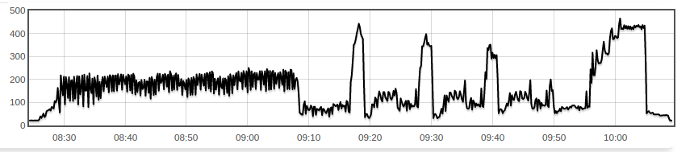
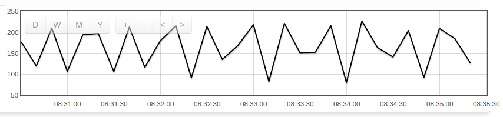
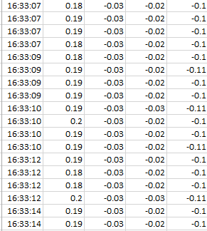
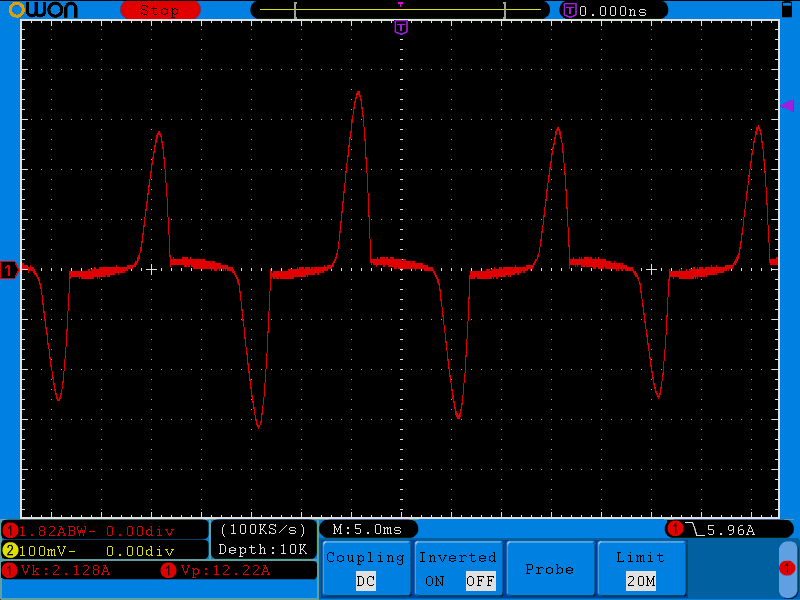

I am using YHDC SCT013 (15A/1V with internal burden resistor) current sensor with arduino for monitoring the current profile of washing machines and using adafruit datalogging shield for the SD card and for the Real Time Clock.
The current was working perfectly fine in the office measuring the current of the Air Conditioner, when I moved to the site, connected the sensors to multiple washing machines(4), the problem is it gives me inaccurate results or I would rather say SCALED results.
when I go to the office again and test it , it works fine ! but it doesn't work in the site for the washing machines
why is it different ? why it works for the Air conditioner but not for the washing machines (under the same circumstances ) .
am I missing anything ?
worth mentioning the current for the air conditioner is kind of stable and doesn't vary a lot , but in the washing machine it changes a lot
I attached the code
Re: current sensor working with air conditioner but not with washing machine !
How did you determine the results were inaccurate, or "SCALED"? Are the machines front-loaders?
As it happens, I did a load this morning. There's very little else on that breaker, so the following graph pretty accurately reflects real power of an LG front-loader wash cycle. I can go back and look at previous washes and they all look pretty much identical. I don't log current sorry, so real power is as close as I can get to your measurements. The vertical scale is Watts:

The initial scratchy bit from about 8:30 through to 9:07 is the wash cycle. I feed it hotwater so it doesn't need to do any heating. The four tall "towers" are the spin cycles, with the last one being quite a bit longer than the earlier three. If I zoom in on the scratchy wash cycle it looks like this:

That's sampled every 10 seconds, with each reading being (WattSeconds consumed in last 10 seconds)/10 which is the equivalent of average power used in the last 10 seconds in Watts. I'm pretty sure my machine completely stops for a few seconds between each forward/reverse wash pulse, i.e it goes forward-pause-reverse-pause etc. I suspect if I were sampling a lot faster (which I'm guessing you are), I'd see close to 0W during the pause seconds.
So in summary, you're sampling a very dynamic signal. Depending on exactly when your samples are taken, you could validly see anything from 0 up to what I would imagine would be very high currents as the motor starts to spin up (potentially quite a bit higher than your 15A briefly). As an example, you can see a picture of the startup current drawn by a 600W pump in this thread: http://openenergymonitor.org/emon/node/10110
Re: current sensor working with air conditioner but not with washing machine !
dBC thanks for the reply.
answering your question, I am using clamp amp meter that displays the current in lcd and compare it by observations in the serial port monitor in the real time.
actually I am monitoring 4 washing machines with a very high sampling rate which will get 8 current values every second ( 2 values for each machine ) it looks something like
8:49:35 0.62 0.58 0.04 0.63
8:49:35 0.62 0.63 0.05 0.57
8:49:37 0.55 0.62 0.04 0.59
8:49:37 0.57 0.58 0.04 0.56
but the sampling rate is not the problem because in some interval during the washing cycle, the current is quite stable in the range of 0.9Amp -1 Amp (measured using the trusted amp meter ) and the arduino reads 1.9 Amp or 2 Amp.
and the same as your readings, i get repeatedly the same graph for each washing cycle which means the system is kind of consistant but not accurate.
ps what is the software you are using for the graph ?
Re: current sensor working with air conditioner but not with washing machine !
I'm not sure you can truly trust your clamp ammeter. What are its specs? The closest my washing machine gets to a steady state is the final high speed spin cycle, but even then it appears to be doing some sort of spin-speed governing (it's one of those machines that let you select your spin speed). Even at my 10 second sample rate, I can see it doing something.
How did you calibrate your device? With a beefy resistive load? Or did you use the air-conditioner?
There's a chance that the current signal through the washing machine (and the air-conditioner) is a long way from a nice sine wave, you can see my water pump in the link above looks more like a triangle wave once it's settled down. Your clamp meter may well only be good for sine waves. If I remember, I'll put the scope on mine next time I'm doing some laundry.
I'm not familiar enough with emonlib to review your sketch, but hopefully others will, in case there's something obvious in there.
SIDE BAR: I've never checked the PF of my washing machine (another thing to do next time I do some laundry) but if it's a lot less than 1, then measuring the current won't be a great indication of how much real power it's using. That's not relevant to your current issue though, since you're comparing ammeter with ammeter.
Re: current sensor working with air conditioner but not with washing machine !
the clamp ammeter is quite trustworthy i tested it for a predetermined current and the results are fine. I blame it on the arduino or whatever reasons. the most relative thing in the specs is that, its frequency response from 40Hz to 1kHz on AC current and voltage ranges, and here we are dealing with 50 Hz signal.
"How did you calibrate your device? "
I calibrated it using the air conditioner.
"clamp meter may well only be good for sine waves" :
this is a good point, I will check the wave using oscilloscope.
"I'm not familiar enough with emonlib to review your sketch"
actually the library and the coding is quite simple and its working since it gave me the correct results for the air conditioner
actually, in some point I may need to have the power calculations but for now, I will be doing order analysis that provides some information about the healthiness of the machine.
thanks dBC
Re: current sensor working with air conditioner but not with washing machine !
ps what is the software you are using for the graph ?
I forgot to answer that part. It's emoncms.
Re: current sensor working with air conditioner but not with washing machine !
I calibrated it using the air conditioner.
Then you probably want to check that's a sine wave as well.
Re: current sensor working with air conditioner but not with washing machine !
What is the significance of "int noOfSamples=636;"? Does that work out to be a whole number of complete cycles given your mains frequency and your hardware? CalcIrms starts reading at a random point on the current wave, so for consistent results even on a steady load, you must get as close as possible to an exact number of cycles.
Second, as dBC says, the shape of the current wave is very important. CalcIrms calculates the true rms average. Unless your clamp ammeter also reads true rms, and over a big enough range of form factor, then it will probably display an incorrect value if the wave is not a perfect sine wave. This is because many meters measure the rectified average value but display a number which is the rms value only if the wave is a perfect sine wave.
If your load current is fluctuating greatly, you might want to look at converting the 'continuous' sketch to run on your hardware with the data logging. I don't guarantee that it will be possible to make it work with the extra (and slow) problem of writing to the SD card, but it is something to consider.
Re: current sensor working with air conditioner but not with washing machine !
thanks Robert Wall for the reply.
the main frequency is 50 Hz, as the function CalcIrms takes 106 samples for every cycle of the current , 636 is 106*6 which means 6 complete cycles. if I am not missing anything.
regarding my clamp ammeter, I have checked the specifications and its TRUE that, the current waveform is supposed to be a sin wave. so that means I take the unfiltered samples for the current waveform and verify weather its a sin wave or any other shape of waves. the first attached picture is the waveform for 4 cylces as we can see its consistent:

the second pic is 1 cycle
and the third one is the first portion (the first 5 mins for 1 cycle
does it make sense as a current profile for a washing machine ?
actually yes, logging into the memory card is a bit of problematic but still I am using some kind of buffer to take the readings for many cycles and then pass it to the memory card which will eventually gives a good speed as in one second i can measure 4 current RMS values for each washing machine (I monitor 4 washing machines ).
the readings will be something like picture number 4, if you look at the timestamp, you can see its not that slow:

Re: current sensor working with air conditioner but not with washing machine !
Here's what the current signal on my washing machine looks like when it's spinning at 1300 RPM:

In fact, it looks awfully like a SMPS looks. A quick check of the user's manual reveals:
Inverter Direct Drive system
The advanced Brushless DC motor directly drives the drum without belt and pulley
The scope's RMS calculation on that signal was 2.128A.
My precision front end clocked it at 2.242A
My cheap clamp ammeter clocked it at 1.1A
So if your washing machine uses similar technology to mine, and your clamp ammeter is as basic as mine, I'd put money on your Arduino based monitor over your clamp ammeter. EXCEPT you calibrated your monitor using the same clamp meter and an aircon which potentially has a similar inverter/DC motor set up. So it's possible your calibration is completely wrong as well. Far better to calibrate it with a big (say 2kW) resistive load.
According to my precision front end that load above, combined with V (not shown) measures up as:
Apparent Power: 559VA, Real Power: 395W, Reactive Power: +115 VAR, Distortion Power: 378 VAR.
Re: current sensor working with air conditioner but not with washing machine !
OOOH that is really SURPRISING !
maybe this is the reason and the arduino is the one with the correct values! as I said to Robert,my clamp is the basic one as I checked the specification.
that leads me to re-calibrate my device and to test the current waveform of the washing machines when I get to the site again.
thanks dBC and Robert ,that almost solved the problem and let met reconsider things. I will let you updated with the results.
Re: current sensor working with air conditioner but not with washing machine !
Yeh, although I don't understand your second picture. Are you saying that's 20 msec worth of your current readings? Why are they all positive? I would expect it to be roughly symmetric around 0. And I'm puzzled why there are so many pulses. Looks like roughly 40 pulses in 10 msecs, or 4kHz.
Re: current sensor working with air conditioner but not with washing machine !
the second picture is the RMS current profile for one cycle of washing (28 mins of washing ), its not the waveform of the original current but the RMS. makes sense now ? that is why it positive and not symmetric around
here is a picture with a correct timestamp , the x axis represents the time, the y axis represents the RMS current for a washing cycle (around 28 mins):
actually my explanation so far for the pulses is that, it happens when the washing machine suddenly spins with a higher speed so the current goes high and causes these pulses.
correct me if I am missing anything or if you didn't understand what I am saying : )
Re: current sensor working with air conditioner but not with washing machine !
Ah right... that makes a lot more sense. "cycle" is an overloaded term on this thread... there are washing cycles and mains cycles... one takes 20 msecs, and the other about 20 mins! The pulses are much more explainable if that's a 20 min washing cycle rather than a 20 msec mains cycle.
Re: current sensor working with air conditioner but not with washing machine !
just for the record, the problem was with the clamp meter. when I verified the current waveform from the washing machines, it turned out to be not a pure sin wave. which were causing the problem.
Thanks dBC.